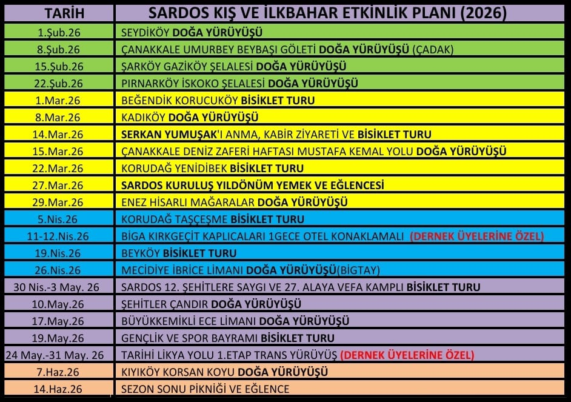

Kuzey Ege'nin eşsiz değeri Saros Körfezi'ni korumak, tanıtmak ve doğa sporlarını yaşamın bir parçası haline getirmek için pedal çeviriyor, adımlıyoruz.
Bizi TanıyınSARDOS, 10 Şubat 2014 tarihinde bir topluluk olarak Edirne’nin Keşan ilçesinde kuruldu. Doğa ve spor tutkunu 25 bisikletçinin attığı ilk adımla büyüyen hareketimiz, 11 Mart 2019 tarihinde tüzel kişilik kazanarak dernekleşti.
Temel kuruluş amacımız; kendi kendini temizleme özelliğine sahip dünyadaki ender körfezlerden biri olan Saros Körfezi'ni ve bölgemizin ekolojik turizm potansiyelini bisiklet, doğa yürüyüşleri ve diğer doğa sporları aracılığıyla tanıtmaktır.
Edirne'nin Keşan ilçesi ve muhteşem Saros Körfezi başta olmak üzere, Trakya bölgesinde doğa sporlarını yaygınlaştırmak, çevre bilincini artırmak ve bölgenin doğal güzelliklerini korumak amacıyla kurulmuş aktif bir sivil toplum kuruluşudur.
Bölgedeki doğaseverleri, bisikletçileri, dağcıları ve yürüyüşçüleri bir araya getiren dernek, özellikle yerel kültür ile doğayı harmanlayan etkinlikleriyle tanınır.
Kuruluş Yılı
Aktif Faaliyet
Hafta içi alıştırma sürüşleri, şehir içi ve şehir dışı MTB/Yol bisikleti turları düzenliyoruz.
Bölgemizin tarihi ve doğal güzelliklerini kapsayan yeni rotalar keşfediyor ve doğa yürüyüşleri gerçekleştiriyoruz.
Ulusal ve uluslararası doğa sporları festivallerine katılıyor, kamplı organizasyonlar yapıyoruz.
"27. Alaya Vefa ve Şehitlere Saygı Bisiklet Turu" gibi gelenekselleşen anma turları düzenliyoruz.

Güncel faaliyetlerimizi sosyal medya hesaplarımızdan takip edebilirsiniz: Sosyal Medya Kanallarımız
"Hedefimiz; kendi kendini eğlendiren, dibini aydınlatan bir mum değil; çevresini aydınlatan bir ışık olmaktır."
Keşan Saros Doğa ve Spor Derneği (SARDOS), sadece Trakya’da değil, Türkiye genelindeki doğa ve bisiklet toplulukları arasında kendine has duruşu, felsefesi ve taviz vermediği değerleriyle öne çıkan bir oluşumdur. Onları sıradan bir spor kulübü olmaktan çıkarıp köklü bir topluluk haline getiren şey, yıllar içinde inşa ettikleri ve titizlikle korudukları temel ilkeleridir.
1. Ekolojik Sürdürülebilirlik ve "Sıfır İz" Prensibi
SARDOS, gerçekleştirdiği tüm açık alan etkinliklerinde (doğa yürüyüşü, kampçılık, bisiklet turları vb.) doğaya minimum etki etmeyi temel bir görev kabul eder. Faaliyet gösterdiğimiz hiçbir coğrafyada arkamızda insan eli değdiğine dair kalıcı bir iz bırakmamak, biyolojik çeşitliliğe ve yaban hayatına saygı göstermek en katı ilkemizdir. Derneğimiz, koruma-kullanma dengesini gözeterek gelecek nesillere bozulmamış bir doğa bırakmayı taahhüt eder.
2. Çevre Savunuculuğu ve Aktif Çevre Hakları Takibi
Sadece spor faaliyetleri yürüten bir kulüp olmanın ötesinde, başta Saros Körfezi ve Trakya bölgesi olmak üzere tüm ülkenin doğal kaynaklarının korunmasında aktif bir taraftır. Doğal ekosisteme, kıyılara, ormanlara ve su kaynaklarına zarar verebilecek her türlü çevre kirliliği, yasa dışı yapılaşma ve ekolojik yıkım girişimine karşı sivil toplumun sesi olmayı, yasal ve toplumsal farkındalık süreçlerine katkı sunmayı kurumsal bir sorumluluk olarak görür.
3. Yarış Değil, Keşif ve Farkındalık Odaklılık
SARDOS, doğa sporlarını bir performance yarışı, hız veya tüketim nesnesi olarak değerlendirmez. Faaliyetlerimizin temel felsefesi; doğanın ritmine uyum sağlamak, coğrafyayı anlamak ve bireysel farkındalığı artırmaktır. Amacımız, en kısa sürede en uzun mesafeyi katetmek değil; gidilen rotanın sunduğu doğal, tarihi ve kültürel değerleri özümseyerek "yolda olma" kültürünü yaşatmaktır.
4. Toplumsal Hafıza ve Yerel Kültürle Bütünleşme
Derneğimiz, rotalarını belirlerken ve uygularken sadece coğrafi sınırları değil, insani sınırları da esas alır. Ulaştığımız her köyde, temas ettiğimiz her yerleşim yerinde yerel halkın kültürüne, emeğine ve yaşam tarzına saygı gösteririz. Bölgesel insan hikayelerini dinlemek, somut olmayan kültürel mirası yerinde gözlemlemek ve toplumsal irfana katkı sunmak kurumsal kimliğimizin ayrılmaz bir parçasıdır.
5. Ticari Bağımsızlık ve Samimiyetin Korunması
SARDOS, sivil toplum kuruluşu olmanın verdiği sorumlulukla kar amacı gütmeyen, bağımsız yapısını titizlikle korur. Dernek faaliyetlerimizin, tüketim odaklı veya topluluk ruhunu zedeleyebilecek ticari sponsorluk kaygılarına alet edilmesine izin verilmez. Gösterişten uzak, samimi, gönüllülük esaslı ve kurumsal özerkliğe sahip yapımız en büyük güvencemizdir.
6. Kolektif Disiplin, Güvenlik ve Yoldaşlık Hukuku
Tüzel kişiliğimiz çatısı altında düzenlenen tüm etkinliklerde "birlikte başlama ve birlikte bitirme" ilkesi geçerlidir. Katılımcıların güvenliği, uluslararası spor ve emniyet standartlarına tam uyum (kask kullanımı, rota disiplini, çevre şartlarına uygun ekipman vb.) tavizsiz bir şekilde uygulanır. SARDOS turlarında her üye birbirinin yoldaşıdır; grup içi dayanışma, hiyerarşiden ve rekabetten her zaman üstün tutulur.
Etkinliklerimize katılmak ve güncel duyuruları takip etmek için kanallarımız üzerinden bizimle iletişime geçebilir, merkezimizi haritada bulabilirsiniz.